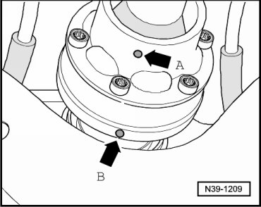
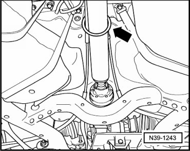
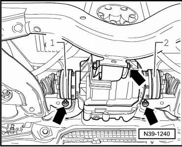
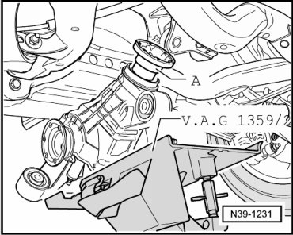

Rear Final Drive
Rear Final Drive
Special tools, testers and auxiliary items required
• Torque wrench (VAG 1331)
• Torque wrench (VAG 1332)
• Engine and transmission jack (VAG 1383 A) with universal transmission adapter (1359/2)
- Raise vehicle.
- If an underbody impact guard is located beneath the rear final drive, remove it.
- Remove rear part of exhaust system:
- Check whether there is a marking (colored marking) on rear driveshaft and on driveshaft flange of the rear final drive.

- If this marking is not present, then mark in color the position of driveshaft flange - arrow A - to rear final drive - arrow B -.
- Disconnect rear driveshaft from rear final drive and secure - arrow -. Refer to --> [ Rear Driveshaft ] Rear Driveshaft.

- If equipped, remove the differential lock motor (V304). Refer to --> [ Differential Lock Motor ] Differential Lock Motor.
- Detach left - 2 - and right - 1 - drive axles and secure.

- Place engine and transmission holder (VAG 1383 A) with universal transmission adapter (VAG 1359/2) under the rear final drive.
- Remove bolts and nuts for rear final drive at subframe - arrows -.
- Tip up rear final drive at driveshaft flange- A -.

- Lower rear final drive slightly and pull breather line off the breather connection. Refer to --> [ Breather Line Routing ] Breather Line.
- Lower rear final drive.
Installing
Install in reverse sequence; note the following points:
Always replace bolts for rear driveshaft.
- To prevent imbalance, the flange of the rear driveshaft - arrow A - and the rear final drive - arrow B - must be fitted so that the colored markings from the factory or those subsequently made are in alignment.
- Fasten the rear final drive to the subframe - arrows -.
- Fasten right - 1 - and left - 2 - drive axles at flange shafts.
- If equipped, install the differential lock motor (V304). Refer to --> [ Differential Lock Motor ] Differential Lock Motor.
- Connect rear driveshaft. Refer to --> [ Rear Driveshaft ] Rear Driveshaft.
- Thereby, install center bearing for the driveshaft, so that it is free of stress. Refer to --> [ Rear Driveshaft Center Bearing ] Rear Driveshaft Center Bearing.
- Checking gear oil in rear final drive. Refer to --> [ Gear Oil, Checking ] Gear Oil, Checking.
- If an underbody impact guard is located beneath the rear final drive, install it.
- Install rear part of exhaust system: